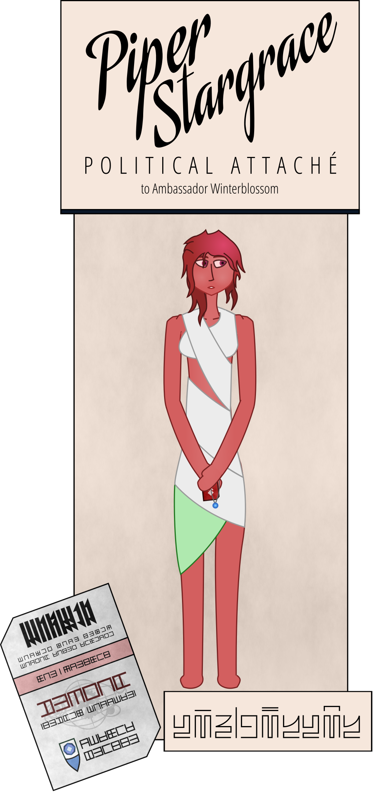

The embassy guards take special care this time not to touch any of my people as we pass one by one through the gateway. They take our entry cards, exchanging them for smaller “passage cards.” These look much more serious, printed in the same blocky script I’ve seen here and there on embassy signage instead of the Khmai on our entry cards.
There are only a few elements I can recognize. The tiny, stylized representation of Sapphire’s flag at the bottom. The emblem of the League printed behind some of the text. And of course the icon of the Society on the obverse. For some reason, my card is blue; the others are red. “Don’t lose this,” the officer instructs as he opens the gate for me to step through. “It will ruin your entire day.”
After exchanging our cards, they usher us out into what I suppose must be the “secure side” of the embassy, if such a place could be said to have an “insecure side.” Maybe more of a quarantine zone. The architecture here is different; less sterile and imposing. It’s light, and the metal is accented with the occasional bit of wood. There are open windows, plants along the walls. A warm, gentle breeze.
This part feels more like an embassy, and less like a military base. Although I can’t say I’ve ever been naked in an embassy before. First time for everything I guess. There’s a small laundry-cart sitting just past the screening chamber; a staffer reaches in and hands me a bundle of white fabric. “Your robe, comrade.”
I hold up the fabric and it unfolds, dropping onto the floor. “How exactly do I, um. Wear this?” I ask, turning it this way and that to try and make some kind of sense of the garment.
“I show you.” The staffer winds the top loop around my shoulders, pulling it snugly across my chest. She hands me the other end of the fabric, and motions to wind it around my waist. It takes a few tries to get it to cover my body to my satisfaction. The People seem to be more careless, their robes wound so as to display their bare skin here and there, but after today, I’m determined to conceal as much as I possibly can. I’m starting to miss my old greatcoat, even with all the bloodstains.
The staffer steps behind me and loops the loose end through one of the folds, pulling it snug. I examine myself in a window reflection. I’ve never seen my body framed quite this way before. The fabric is unfamiliar, soft, thin, and stretchy, enveloping and cushioning my body instead of hanging off it. It’s… a strange sensation, but not unpleasantly so.
“Don’t you have, you know. Tunics?” I ask the staffer, as she passes out robes to the rest of my people.
“Very sorry, comrade. I am not know what that word means.”
I wave her away, and walk over to Piper, who’s fiddling with her own robe. “Need any help?” I call.
Piper shakes her head. “Oh, no, thank you, ma’am, I’ve, um. Paying attention to how they wear them, I think—” The entire garment rolls off her shoulders and collapses to the floor, leaving Piper again naked. She squeezes her legs together in embarassment. “Actually uh. Yes, ma’am.”
“Here.” I secure the robe over her shoulders the way the staffer showed me, and pass Piper the rest of the cloth. “Think you can get it now?”
“Y-yes, ma’am! I’m so sorry, ma’am. Thank you, ma’am!”
“At ease, Piper.” I pat her on the shoulder. “I’m your ambassador, not your commander. You don’t have to call me ‘ma’am’ every time you say something to me.”
“O-oh, yes, ma’am. I mean— sorry, ma’am— I mean—”
I roll my eyes and glance back to the security station. Not all my people are through yet and there seems to be some sort of commotion. What’s Jay done this time?
I’m starting to understand why the People dress like they do. The robe is light and doesn’t get in the way of my movements as I hurry back over to the gate; in fact, the way it holds and supports my breasts is actually quite comfortable. Bear, still naked, is standing with arms folded, glowering at a security officer. Jay, fumbling with her robe, gazes innocently at me as I walk past.
“What’s he supposed to do?” Bear is growling. “Just suffer in silence for four years?”
“Intake policy is extremely clear about unknown biomaterials—”
“It’s a damn medicine, woman!”
“Guys?” I put a hand on Bear’s shoulder. “What’s going on?”
Ash is standing awkwardly between Bear and the security officer, clutching a small paper bag. He looks down, unable to meet my gaze. “I—I’m so sorry, I didn’t—I didn’t mean to cause any trouble—I didn’t think it would be a problem—”
“Your attaché tried to bring a bag full of plant matter through security,” the officer interjects.
I raise an eyebrow at Bear. He sighs.
“Ash gets migraines. Bad ones. His elder figured out surokho root tea would make them go away.”
I rub my temples. “I am so ready for this day to be over,” I mutter to Bear in Khmaira. I turn to the officer. “What exactly is the problem? It’s just a medicinal herb. Not opium or anything.”
“We have no idea what effects that plant could have on the biosphere of the Capital if it were introduced,” the officer replies. “Years of study would be required before we’d even consider allowing a specimen to be brought through.”
“He’s not going to plant it! Are you, Ash?”
“No, ma’am!”
“The risk exists and it’s not one we are permitted to take,” the officer says firmly. “I’m sorry, comrade. We cannot make exceptions.”
“What’s going on?”
I glance over my shoulder. Soshten ushers a few more of my people out into the embassy and walks over to me, touching my arm gently.
“One of my attachés tried to bring a medicinal herb through.”
Soshten glances at the officer, who nods. “Is this… part of his spiritual practice?”
I shake my head. “No, it’s a real medicine. It helps him with his migraines.”
“‘Migraines?’”
“Um. They’re like. Really severe headaches.”
“Head… aches?”
“You know. Like when you spend too long reading in bad light, and your head hurts for a few hours afterwards?”
Soshten stares at me. “I’ve never heard of such a thing. That sounds miserable, comrade.”
“You’ve never… do you not get headaches?” Bear demands.
Both Soshten and the officer shake their heads. “Is it… common among your people?” she asks.
“I… just about everybody gets them.”
“Everyone?”
I nod.
Soshten looks at me pityingly. “And this is just… normal to you?”
“I’d never really thought about it.”
Soshten turns to Ash. “We have a medic on staff who is trained in uastashi physiology. He should be able to recommend a course of treatment. Our medications will likely be more effective than whatever… folk medicine you’re currently relying on.” She holds out a hand. “Is that acceptable?”
Ash hesitates for a moment, then nods and hands her the bag. Soshten passes it to the other officer, saying something in Ranuir. She nods, opens the gate, and departs. Soshten turns back to me. “My apologies for the continued difficulties, comrade,” she says, inclining her head.
“We clearly have a lot more to learn about each other.”
Soshten smiles. “We clearly do. Comrade Ambassador?” she adds as I start to turn away.
“Yes?”
“You look good in a rancal.” She gestures to indicate the robe. I can’t stop myself from blushing.
“I… thank you, comrade Soshten.”
Soshten inclines her head. I turn and walk back to where my people are gathered, taking Bear by the arm.
“You should probably put some clothes on now.”
“Ooh.” Bear glances down. “Right. Forgot for a minute.”
“Bear?”
“Yeah, Kess?”
“Never change.”
“Ma’am?” A young woman clad in a red-and-white uniform I haven’t seen before accosts me. “You are Kestrel-ambassador, yes?”
I nod. “That’s me.”
The staffer inclines her head. “I am Nishuin Coruani Casrani, Cultural Liaison to Sapphire. I am responsible for your wellbeing and that of your staff while you are among the People. It is so good to finally meet you.” She reaches out a hand.
Slightly surprised, I shake her hand. “You know our customs. And your Zia Ţai is flawless.”
Nishuin beams. “Of course, comrade. I have studied your people extensively.”
“I wish I could say the same. All I seem to hear about your people are rumors and lies.”
Nishuin nods quickly. “Please do not feel any obligation to emulate our customs, comrade. We are aware of the disparity and are perfectly willing to shoulder the burden ourselves. That is, after all, my role.”
I smile and clap her on the shoulder. “Don’t worry, I’ve picked up a thing or two anyway.”
“O-oh.” Nishuin hesitates for a moment, fiddling with her beret, then returns the gesture. “I-I see you have been somewhat exposed to our— Well, I— I hope our people have not caused… needless disharmony by their ignorance.”
“Things were a little complicated. I guess nobody told them about our nudity taboo.”
“…nudity…taboo?” Nishuin stares.
“…you didn’t know either?”
“Nobody told me!” Nishuin exclaims in exasperation. “I will need to file a report with Office—” She stops short and bows deeply. “I do apologize, comrade Ambassador, I can only imagine the distress we must have already inflicted.”
“Don’t worry, it’s all been sorted out.” I give her an encouraging smile. “I’m sure you’ll keep everything under control in the future, comrade.”
Nishuin bobs her head. “I thank you for your understanding and confidence, comrade Ambassador. I shall do my utmost to prove worthy of it. May I show you to your quarters?”
“Please. And call me Kestrel.”
“Oh! I— certainly, comrade Kestrel.” She beckons. “This way, please.”
Nishuin leads us down a wide corridor, and out into an open-air deck. “This courtyard has been assigned for your leisure while you are in our custody,” she explains, gesturing at couches and tables nestled among the trees and plants. “This way.”
She takes us through to another corridor, lined with doors. Huge, sloping glass windows let in sunlight from outdoors and offer a view of the deck. “Individual cabins have been provisioned for your use. Please find the door with your name on the placard and hold your passage card to it. It will unlock automatically. Washing facilities and bathrooms are located at the far end of the corridor, as is my office. I have endeavored to translate all signage to a script you will find legible.” She turns to me. “Your quarters are this way, comrade Kestrel.”
Nishuin leads me to the other end of the hallway and slides a door back. I follow her into a small but cozy little room. There’s a window set into a wall cubby, occupied by part of the bed and a neat stack of books and papers. A small grey couch, with room for maybe two people, sits next to the door. On the other side of the room is a desk and a heavily cushioned chair, with a few empty cups sitting on the edge. She turns back to me and bows.
“I hope all is to your satisfaction, comrade Kestrel? I apologize that we were unable to provide the sort of lodgings to which you must surely be accustomed, given your position, but all quarters in this facility are designed according to the same pattern.”
“It looks fine, don’t worry.” I wave her away. “It’s got a warm bed, light, and a door that locks. That’s all that matters. Compared to some of the places I’ve slept, it’s a palace.”
“Ah, yes, of course.” Nishuin clasps her hands. “I’ve read a great deal about your… actions during the Sapphirian Revolution, comrade Kestrel. You must have suffered tremendously for your people.”
I sigh. “Of course you have.”
Nishuin nods quickly. “Oh, yes. I admire you greatly, comrade.”
“Do you now.” I sit down on the couch and massage my neck, staring at the ceiling.
“None among the People have had to fight so desperately for our lives in many a generation,” Nishuin replies. “Whenever we are threatened, legions of us stand ready to protect one another. But you rose up alone. You were surrounded by barbarians and still you fought. For what you, what we believe in. You are everything the Society stands for.”
Now my head is starting to throb. “That was a long time ago, comrade,” I murmur. “I’m not here to fight anyone. I just want to give my people the best future I can.”
Nishuin looks at me in confusion. “I— I see. Well. I— it is a great privilege to meet you, all the same. I hope I can be of use to you while you are among us.”
“Thanks. Right now, I just want to rest.”
“Of course! Please come find me if there is any way I can assist.” Nishuin backs towards the door. “The handset on the desk will connect you directly to my office. Shall I fetch you when dinner is ready to serve?”
“How long will that be?”
“About… four of your hours, I think.”
“Sure. Thanks.”
“My pleasure, Kestrel-ambassador. I will leave you in peace, then.”
I curl up into a ball as the door clicks shut, and rest my head against the couch cushions. I sit there for a while, taking deep, slow breaths, trying to regroup. They’re all gone. It’s over.
I don’t have to be strong anymore.
And all the pent-up tears all come through at once.
